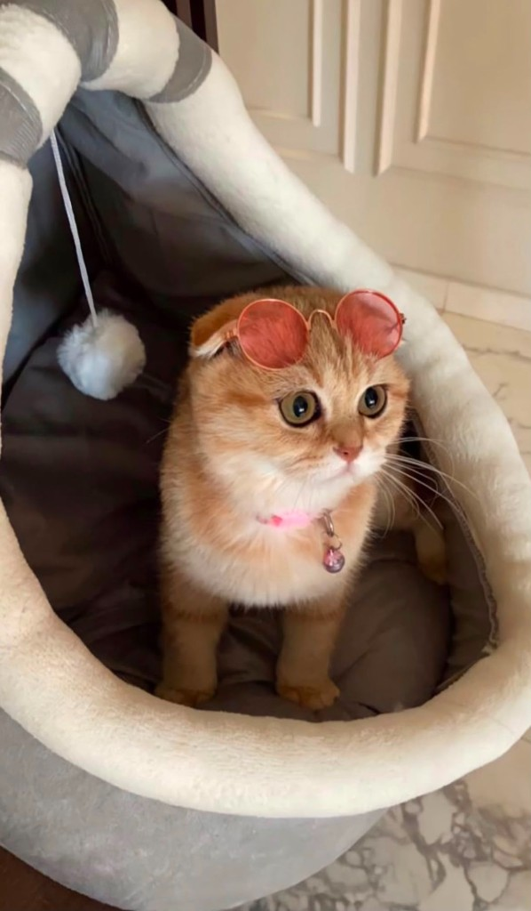
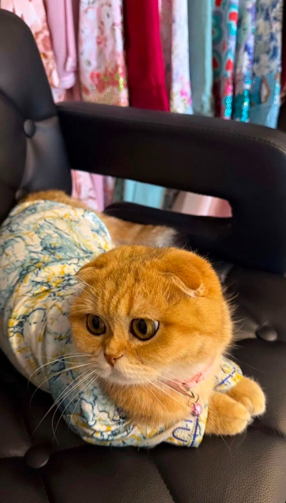
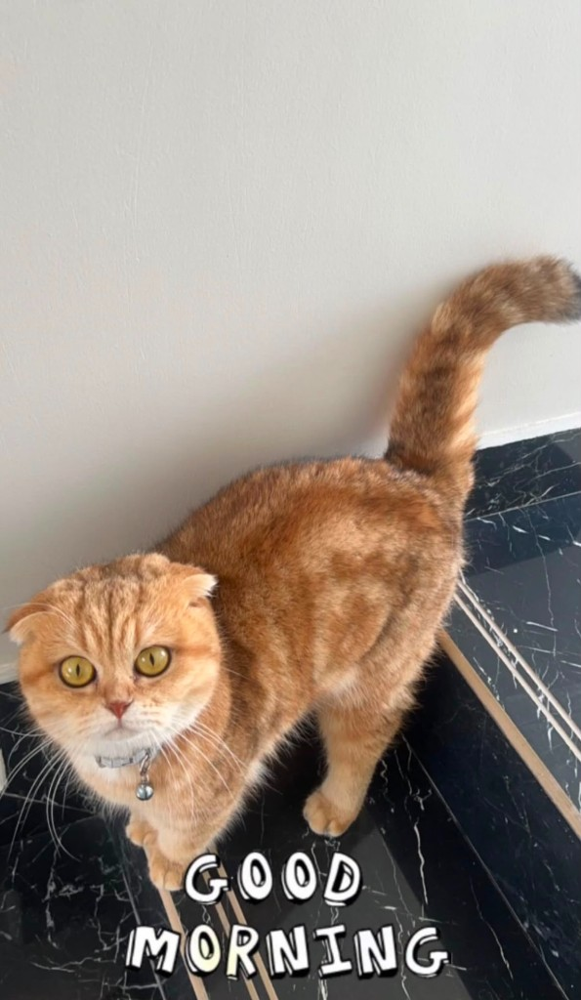
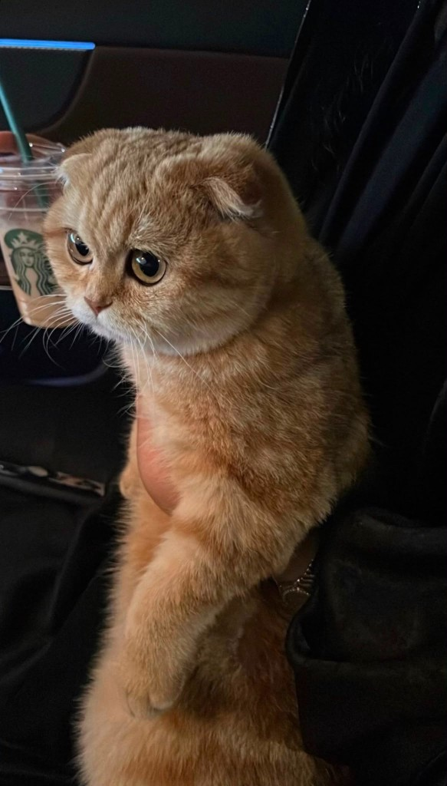
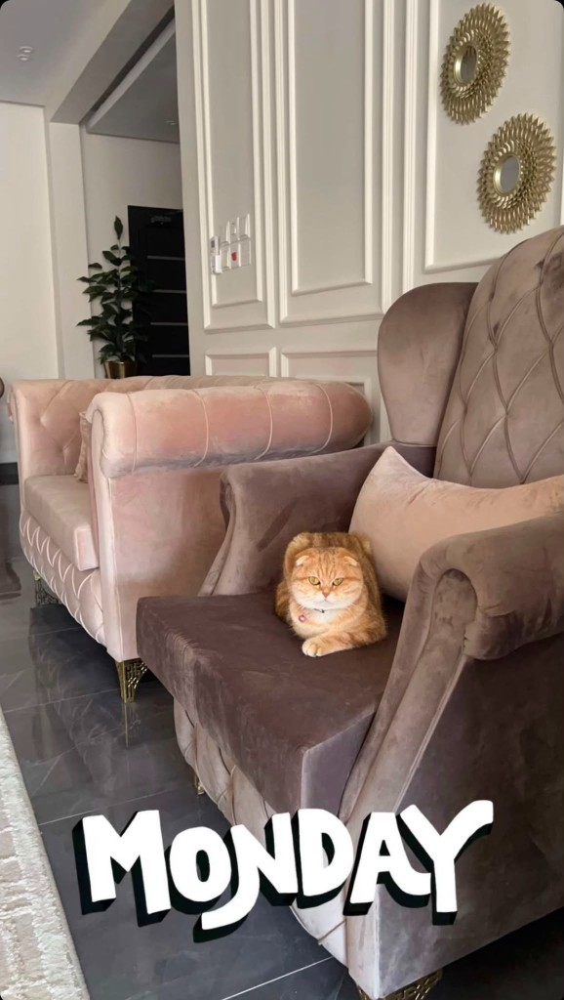

ستايل ما ينلحّق
حتى وهي مرتاحة، تطلع كأنها على غلاف مجلة. النظارات؟ تفاصيل. الجمال؟ أساسي.
من هي؟
سكر سكوتش فولد بفراء برتقالي دافئ، وأذنين مطويّتين، وعيون تخلّي قلبك يذوب من أول نظرة. كل يوم معها درس في اللطافة، وكل صورة لها دليل إنها الأجمل بلا منازع.

تمشي على الرخام كأنها تملك المكان، وتنام كأنها تحلم بعالم كله حنان. جرسها الوردي يعلن وصولها قبل ما تشوفها، ونظرتها الذهبية تخلّي أي يوم عادي يصير أجمل.
مدح مستحق
لأنها جمعت الحلاوة والهيبة في نفس الوقت — لطيفة، أنيقة، وما تخلّي أحد يمر بدون ابتسامة.

حتى وهي مرتاحة، تطلع كأنها على غلاف مجلة. النظارات؟ تفاصيل. الجمال؟ أساسي.

تبدأ اليوم بنظرة واسعة وذيل مرفوع، وكأنها تقول: الدنيا أحلى بوجودي.

عيونها تكفي… نظرة واحدة، ويصير اليوم أخف وأحلى بدون أي كلام.
من أبسط الحقائق
أحلى من السكر — واسمها ما جاء من فراغ.
أعين ذهبية — نظرة واحدة وتضيع.
فراء يذوب — ناعم، دافئ، ويلمّع تحت الضوء.
شخصية أميرة — هادئة، مدلّلة، ومحبوبة البيت.

لحظات سكر
من الرخام للسرير، ومن السلة للحضن — سكر نجمة في كل زاوية.
بخط أبو سكر
سكر… أنتِ مو بس قطة في البيت، أنتِ أجمل تفصيلة في يومي. وجودك يخلّي المكان أدفا، ونظرتك تخلّي كل شي أخف. هذا الموقع بسيط، بس مدحك ما يخلص — لأنك تستاهلين أكثر.
— أبو سكر